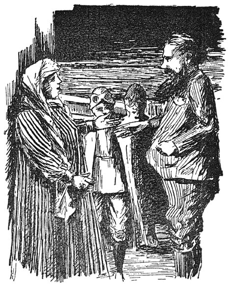
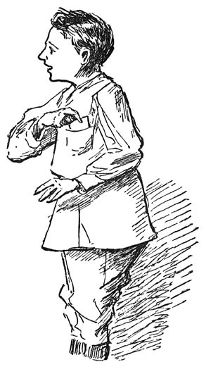

„Hoe heb ik ’t nu,” vroeg de heer aan de dame, „kom je in ’n vreemde vlieger thuis en breng je gasten mee? Waar ben je zoo lang geweest … Ik zat al in ongerustheid over je.”
„Ach …,” zei mevrouw, „dat is ’n heele geschiedenis, maar laat ik je eerst m’n twee dappere redders voorstellen …
Jongens, dat is mijn man, m’nheer Przlwitz—’n vreemde naam hè, maar daar zij we ook
Russen voor … en dit is Jan Drie uit Den Haag en dat is … ja jou naam ken ik nog niet …”
„Ik heet Dolf Brandsma, mevrouw … ook uit Den Haag …”
„Wel jongens,” zei m’nheer Przlwitz terwijl hij hen beide ’n hand gaf, „welkom hier op de Sonnenberg …
Maar vertel me nu eerst eens vrouw, wat er eigenlijk gebeurd is met je … je sprak
van redders … Ik brand van nieuwsgierigheid.”
„Laten we eerst maar naar beneden gaan.… Die jongens willen misschien wat eten.”
[135]
„Asjeblieft drinken mevrouw”… zei Dolf. „Ik versmacht.”
„Hadden jullie dan geen drinken bij je?”

„Vergeten mevrouw … we gingen in zoo’n vreeselijke haast weg.”
„Laten we dan maar eerst de vliegers in de hangar brengen,” stelde m’nheer Przlwitz
voor … „Kom jongens help ’n handje.”
Mevrouw Przlwitz ging naar beneden en m’nheer bracht met de jongens de vliegers onderdak.
„n Prachtig monoplaantje heb jullie daar,” merkte m’nheer Przlwitz op. „Fijn hoor …
’t [136]nieuwste systeem ook nog. Die slaande vleugels hebben aan de vliegtechnikers heel
wat hoofdbrekens gekost.”
„Toch nam Adhémar de la Hault op ’n veld in Casteau er honderd jaar geleden al proeven
mee,” zei Jan Drie.
„Ei, ei,… je ben goed op de hoogte jongeheer … Daar wist ik niemendal van … Hoe heette
die uitvinder zeg je?”
„Adhémar de la Hault, m’nheer.”
„Ja m’nheer,” zei Dolf, „als u wat over de vliegkunst wil weten, moet u Jan Drie maar
vragen. Hij wil luchtingenieur worden.”
„’n Mooi vak,” zei m’nheer Przlwitz. „Hoe oud ben je Jan?”
„Vijftien m’nheer …”
„Verbazend … en heb jij je vliegbewijs dan al?”
„Nee,” zei Dolf … „hij zit pas in vier … Ik heb ’t maar Jan Drie kwam ’t beter toe
dan mij …”
„Zoo?” zei Jan … „Ik weet nog niemendal van de weerkunde …”
„O, dat snertvak,” smaalde Dolf … „Dat heb jij in ’n paar maanden onder de knie.”
„Nou, nou … „lachte m’nheer Przlwitz, „je hoeft niet zoo laag neer te zien op de weerkunde. Dat is ’n wetenschap, die de
vliegmenschen niet missen kunnen. Waar zouden we aankomen, als we geen verstand hadden
van luchtstroomingen, en als we niet uit de stand van onze weerinstrumenten konden
voorspellen wat er in de eerstvolgende dagen in ons element zou veranderen?”
„Wel,” lachte Dolf „dat lees ik in de krant …”
[137]
„Niet voldoende,” meende m’nheer Przlwitz. „Je moet op je zelf kunnen vertrouwen.
Wat jij Jan?”
„Ik vind dat u gelijk hebt m’nheer … en ik zal er mijn best op doen in dit jaar …”
„Jij liever dan ik,” zei Dolf … „ik viel er altijd bijna bij in slaap.”
„Is die aeroplaan van jou Dolf?” vroeg m’nheer Przlwitz …
„Ik wou dat ’t waar was m’nheer … Hij is van oom Dokie.”
„Zoo … laten we nu dan maar naar beneden gaan … Kijk hij eens … Is de dorst zoo groot?”
Dolf dronk uit z’n hand onder de kraan van de waterleiding in de hangar.
„Hè, hè … dat smaakt …”
M’nheer Przlwitz en Jan waren al naar de lift gegaan, en Dolf ging hen gauw achterop,
onder ’t loopen z’n handen met z’n zakdoek afdrogend.
M’nheer Prlzwitz wees de jongens ieder ’n kamer waar ze zich ’n beetje konden opfrisschen
met zeep en water en waar ze die nacht zouden slapen, want mevrouw Przlwitz wilde
in ieder geval, dat haar redders zouden blijven logeeren, iets waar Jan Drie en Dolf
niemendal op tegen hadden. M’nheer Przlwitz ging intusschen naar mevrouw om zich alles
te laten vertellen en toen de jongens klaar waren met hun toilet vonden ze m’nheer
en mevrouw al in ’n gezellige kamer bij de tafel zitten, waarop ’n heele boel lekkere
dingen en heerlijke vruchten stonden en natuurlijk ook de Russische theemachine, de
samovar, waaruit mevrouw de geurige warme drank in fijne glazen schonk, die in zilveren
glashouders [138]met mooie blinkende ooren gevat waren. Terwijl ze aten en dronken zei m’nheer: „jongens,
ik moet jullie nog bedanken voor de hulp die je mijn vrouw verleend hebt … Ze heeft
mij ’t heele ongeval verhaald … Ik begrijp niet goed hoe de Haagsche inspecteur er
toe komen kon mijn vrouw zoo maar voor ’n aeroplaandief aan te zien … ’t Is wel heel
toevallig, dat jullie ook uit Den Haag komt … Kennen jullie dien m’nheer?”
„Jawel..” zei Dolf, „ik ken inspecteur Punt wel, en ’t was geen toeval, dat we daar op die berg waren.”
„Wat, geen toeval?”
„Nee m’nheer,” ging Dolf voort. „We zijn inspecteur Punt achterna gegaan.”
Hij hield plotseling op, want Jan Drie gaf ’m onder de tafel ’n venijnige trap op
z’n voet …
„Nu ga voort” zei m’nheer Przlwitz.
Dolf wist eerst niet goed wat te doen. Hij begreep, dat Jan liever had, dat ie niets
meer losliet. Maar hij kon nu toch niet z’n mond blijven houden, of zeggen, dat ie
er niets meer van wist. Dat was toch te gek … Wat gaf ’t bovendien ook, dacht ie en
hij keek Jan Drie even lachend aan toen hij vervolgde:
„We zijn inspecteur Punt achterna gegaan van Nordhausen af, waar we vanmiddag om drie
uur opgevlogen zijn … Die inspecteur beweerde, dat ie door z’n hond Spits ’t spoor
gevolgd was van ’n gestolen aeroplaan tot op ’t dak van ’t Automatische hotel waar
wij logeerden. Vader, moeder, de zussen en ik … Maar daar raakte hij ’t kwijt en [139]vond ’t later weer terug … en toen zijn wij ’m snel nagevlogen uit nieuwsgierigheid
hoe ’t zou afloopen.”
„Ah zit dat zoo in elkaar … Maar jullie waren zoo dadelijk bereid m’n vrouw te helpen …
en dat had je toch niet mogen doen als ze eens werkelijk de dievegge geweest was …”
„Hè man, hoe kan je dat nu zeggen …” zei mevrouw Przlwitz … „Ik vond ’t heel aardig
van jullie hoor jongens … en m’n man ook.”
„Natuurlijk … natuurlijk …” zei m’nheer, „maar hoe konden die jongens nou weten, dat
jij geen dief was … Die inspecteur en z’n hond hebben zich vergist, dat is buiten
twijfel … maar dat wisten zij toch óók niet.”
„O,” zei Dolf lachend.… „dat wisten we heel sekuur.”
„Was jij er ook zoo zeker van?” vroeg m’nheer Przlwitz lachend aan Jan Drie.
Jan kreeg ’n kleur doch zei niets en Dolf riep:
„Hij begon er ’t eerst over … die wou met alle geweld mevrouw redden.”
„Ik vind ’t echt van jullie hoor,” betuigde mevrouw „en ik ben jullie zeer dankbaar.
Verbeeld je man, zonder die jongens, had ik daar nu nog heel alleen op die nare berg
gezeten, want die inspecteur zal ’t ook wel niet aangedurfd hebben er weer heen te
vliegen toen die nevel om de berg hing. Neen hoor ik ben wat blij, dat ze niet eerst
alles zoo voorzichtig overwogen hebben of ’t wel goed was of niet … Hier, nemen jullie
nog wat van die druiven … en zoo’n groote appel.… Die zal je ook wel lusten.”
[140]
Mevrouw Przlwitz laadde Jan’s bord en dat van Dolf vol vruchten en m’nheer lachte
maar. Hij vond ’t toch bij slot van rekening maar goed, dat die jongens zoo zonder
nadere overwegingen gehandeld hadden, want hij zou ’t ook niet aangenaam gevonden
hebben voor z’n vrouw, als ze ’n heele nacht op zoo’n gure berg tusschen de alpenroozen
had moeten doorbrengen, of wat misschien nog erger was—in de gevangenis. Maar toch,
heelemaal goedkeuren wat die jongens gedaan hadden wou hij ook niet.
„Ik begrijp toch niet hoe die inspecteur met z’n hond juist daar kwam.” zei m’nheer
na ’n poos … „’t Is ’n wonderlijke geschiedenis.”
„Er moet zeker ’n vergissing gebeurd zijn met die hond,” beweerde Dolf. „’t Is de
beste politiehond die ze in Den Haag hebben.”
„Juist daarom” hernam m’nheer Przlwitz. „Zoo’n hond vergist zich niet. Doch, wat denk
je vrouw, zouden we niet nog ’n poosje op ’t dak gaan zitten. ’t Is zulk heerlijk
weer … we kunnen ook in de tuin gaan, maar ik vind ’t op ’t dak aardiger. Daar hebben
we ’n veel beter gezicht op de stad en op ’t meer. We zullen van avond niet veel van
de bergen kunnen zien … want de lucht is betrokken … Anders zijn die bergen om ’t
meer heen, van de Rigi tot aan de Pilatus in maanlicht wel de moeite waard.”
„De jongens mogen ’t zeggen,” zei mevrouw. „Waar hou jij ’t meest van Jan?”
„Mevrouw ik zit ’t liefst op ’t dak.”
„Geen wonder …” riep Dolf … „Daar zit ie [141]thuis ook altijd. Jan is ’n luchtjongen. Die zou wel willen eten, drinken en slapen
in ’n aeroplaan.”
„Kom dan maar. Vrouw je zorgt zeker wel voor wat limonade hè?”
„Laat dat maar aan mij over, m’n twee dappere redders zullen ’t goed bij mij hebben.”
Op ’t dak gingen ze op gemakkelijke stoelen zitten en keken uit over Luzern met al
z’n lichten en over ’t meer, dat nu onder de donkere wolkenhemel alleen maar blonk
van lichtjes op schuitjes en van de lantaarns en de verlichte vensters aan de oevers.
Van de bergen zagen ze niemendal. Die zaten met hun koppen in ’n wolkenmuts.
„Je kan hier anders de lichten van Rigi-Kulm zien,” zei m’nheer, „maar dat treffen
jullie slecht. ’t Lijkt wel of we ’n donderbui krijgen. De lucht is zwart.”
„Jammer”, vond Jan. „Ik zie graag de sterren en de witte bergtoppen.”
„Dat is ’n heerlijk gezicht,” meende ook m’nheer Przlwitz. „Vooral de sterren, de
eenige dingen die we verplicht zijn van onder te bekijken.. hoe hoog we ook boven
de bergen uitvliegen. Dààr kunnen we in geen geval bij.”
„Och,” zei Dolf, „de menschen kunnen zooveel, misschien brengen ze ’t ook nog nog
wel eens zóóver.”
„Je ben ’n grappenmaker Dolf … Ik geloof dat we de grens bereikt hebben, wat de afstand
betreft. Alleen kunnen we misschien onze vliegapparaten nog wat verbeteren. Ik vind
altijd nog maar, dat ’n vogel heel wat beter af is dan wij. Er is te veel omhaal bij,
als wij vliegen willen.”
[142]
„O,” riep Dolf … „U wil vleugels hebben.”
„Dat heb je goed geraden. Ik wou ’n gemakkelijker vliegtoestel, iets dat we net als
vroeger de fiets in ’n klein hoekje konden opbergen, en waar we geen motor, geen schroef en geen staart bij noodig hadden. Misschien komt Jan Drie naderhand
wel eens met zoo iets voor de dag, als ie vliegingenieur is.”
„En dat we zelf in beweging kunnen brengen?” vroeg Jan.
„Nee … mechanische beweegkracht. Vliegen in heel mooi, maar je moet je er niet moe
bij behoeven te werken. Wij hebben onze krachten wel noodig voor andere arbeid … Ah,
nou beginnen ze met de luchtadvertenties … Die hebben we in geen maand hier gehad …
Steeds mooi weer.”
„Bij ons is ’t zelden ’n maand lang mooi weer,” zei Jan … „en als we ’n paar dagen
zonder luchtadvertenties zitten is ’t al mooi.”
„Ik vind die annonces in de lucht wel aardig,” merkte mevrouw op. „’t Zou zonde wezen
als ze die letters tusschen de sterren konden zetten. Maar op zoo’n donkere wolk mag
ik ’t wel, als je toch niets te bewonderen hebt daarboven.”
„Jan!” riep Dolf opeens en allen keken ’n oogenblik zwijgend naar de lucht boven ’t
meer. Daar stond met groote lichte letters in de wereldtaal:
[143]
500 GULDEN BELOONING!
voor diegene, die inlichtingen geeft omtrent een
GESTOLEN CACAOKLEURIGE MONOPLAAN
met SLAANDE VLEUGELS,
van den heer VLIEGENTHERT
TE
DEN HAAG.
En welke er toe leiden den dief of de dieven in handen te krijgen.
M’nheer Przlwitz las halfluid en zeer langzaam: ca-cao-kleu-ri-ge-mo-no-plaan-met-slaan-de-vleu-gels.
„Hé Dolf, dat lijkt wel ’n beetje op de monoplaan van oom Dokie hè?”
„Wel … ’n b … beetje …” stotterde Dolf bleek van schrik en Jan Drie zat met open mond
die duivelsche advertentie in de lucht aan te staren, die maar niet weg scheen te
willen. Maar eindelijk verdween ze toch en Jan was er zóó van opgelucht dat hij plotseling
uitriep in ’t Hollandsch: „Hé afgeloopen!”
En Dolf zei zacht in dezelfde taal:
„Net iets voor oom Dokie … Alles vergeet ie, maar dàt niet.”
Mevrouw en m’nheer Przlwitz verstonden natuurlijk geen Hollandsch maar keken Dolf
en Jan er des te verbaasder om aan.
„Vrouw wat denk je van die twee jongens?” vroeg m’nheer in ’t Russisch. „’t Is niet
in orde geloof ik. Hun monoplaan lijkt me wat al te veel op die gestolen vlieger …
Zouen ’t ’n paar [144]jeugdige gaudieven zijn? Kan haast niet hè?”
„Nee,” antwoordde mevrouw met overtuiging terwijl ze beurtelings Jan Drie en Dolf Brandsma aankeek
die wel beetje uit ’t veld geslagen leken, „’t Zijn vast en zeker eerlijke flinke
jongens .. Bovendien, dan zouden ze toch niet àchter dien inspecteur aangevlogen zijn?”
„Ja maar wie bewijst je, dat ze er achter aangevlogen zijn? Als ze er nu eens vóór
den inspecteur op de berg waren geweest … en die hond was hén gevolgd?”
Mevrouw dacht ’n poosje na en toen zei ze: „Nee man dat kan onmogelijk. ’t Was nog
helder dag toen ik op de berg aankwam en ik heb voortdurend scherp opgelet of er niets
kwam, want ik had hulp noodig … Die inspecteur was de eerste … moet de eerste geweest
zijn … en e … nog wat. Als die jongens die monoplaan gestolen hadden, waarom bleven
ze dan op die berg zitten … terwijl ze vliegolie genoeg hadden. Ze kwamen met ’n vol
blik bij me … Dàn waren ze toch wel eventjes over de Eiger en de rest gewipt … Dat
moet voor zoo’n koene vlieger als die Jan Drie is, ’n kleinigheid zijn …”
„Ik zal ’t hen eenvoudig vragen,” hernam m’nheer. „’t Zou me spijten voor twee zulke
flinke jongens … Ik vind ’t werkelijk aardige kerels … Maar schijn bedriegt soms.”
„In dit geval niet man … ik ben er zeker van dat ’t ’n paar echte eerlijke jongens
zijn.”
Intusschen hadden Jan Drie en Dolf zacht met elkaar zitten smoezen.
[145]
„Ik ben ’n boon,” fluisterde Dolf, „als onze gastheer ’t niet in de doppen heeft …
Dan zijn we allebei zuur … zeg …”
„’k Denk ’t ook … Jij ook met je idee om inspecteur Punt na te vliegen. We hadden
al lang veilig in Den Haag kunnen zijn.”
„We hebben er toch mevrouw Przlwitz door gered. Dat vergeet jij maar even … Anders
zat die nog maar lekker op dat hondje van ’n bergje te klappertanden in de mist …”
„Je hebt gelijk, maar we zitten er toch maar leelijk mee.”
„Wat dunkt je, als we er eens stikem van door gingen zoo meteen?”
„Nee Dolf, dat lap ik ’m niet meer … er kan van komen wat er wil.”
„Moet jij weten … Ik vindt ’t stom … Enfin, ik heb eenmaal gezegd ik sta je half en
daar blijf ik bij … Mee gevangen, mee gehangen.”
„Als we ’t eens aan m’nheer en mevrouw Przlwitz vertelden …” opperde Jan.
„Da’s ’n idee … wil ik ’t maar dadelijk doen?”
„Dat kan ik zelf ook wel …”
„Hm” deed m’nheer Przlwitz op dat oogenblik met een zeer ernstig gezicht, maar mevrouw
keek de jongens met ’n vriendelijk lachje vol verwachting aan.
„Hm, ik moet jullie eens ’n ernstige vraag doen jongens over die monoplaan van oom Dokie … Heet die m’nheer
Vliegenthert?”
„Ja m’nheer …” zei Jan Drie … „en ik e …”
„Is dat werkelijk ’n oom van jou Dolf!”
[146]
„Nou of ie,” zei Dolf lachend, want die rare jongen was, nu de zaak opgehelderd zou
worden, al lang over de eerste schrik en benauwdheid heen. „Hij heet eigenlijk Jodokus
Vliegenthert”
„En dus ben jullie uit met ’n gestolen aeroplaan?” zei m’nheer Przlwitz streng.
Jan Drie werd doodsbleek maar Dolf stoof op:
„Dàt is niet waar m’nheer … Die monoplaan is niet gestolen …”
„Niet? Wat is ie dan, als ik vragen mag?”
„Hij is” … begon Dolf, maar verder kwam hij niet, want hij wist eigenlijk niet wat
de monoplaan dan wèl was.
„Ga voort,” zei m’nheer Przlwitz.
„Ik zal u de heele historie wel vertellen,” zei Jan Drie met ’n brok in z’n keel.
„M’nheer Vliegenthert is erg vergeetachtig en die liet z’n mooie monoplaan gisteren
avond bij ons op ’t dak staan. M’nheer Vliegenthert is onze buurman. Ik was op ’t
dak en vond ’t zonde die mooie vlieger daar de heele nacht te laten staan … Ik wist
niet of ’t goed weer zou blijven … ziet u … en om nu gemakkelijk de vlieger voor onze
hangar te krijgen—want m’nheer Vliegentherts hangar was op slot en de onze aan ’t
andere eind van ’t dak—vloog ik er eventjes mee op. Maar de vlieger schoot dadelijk
’n vreeselijk eind de lucht in … ik had niet op ’t hoogtestuur gelet en toen vond
ik ’t zoo heerlijk daarboven … ik was nog nooit zoo hoog geweest, dat ik besloot ’n
oogenblikje te blijven vliegen … Toen ik echter terug wilde zat ik al in ’n wolk en
m’nheer Vliegenthert had geen kompas in de vlieger.
[147]
„Ik ben toen ’n eindje gedaald om aan den een of ander de weg te vragen, maar zoodra
ik ’n luchtwachter zag werd ik al bang voor ’n bekeuring, omdat ik zonder vliegbewijs
alleen in de vlieger was en ging er onmiddelijk weer tusschen uit. Zoo ben ik aan
’t dwalen geraakt en toen ’t dag werd was ik heelemaal boven Nordhausen en … daar
trof ik gelukkig Dolf Brandsma aan, die daar met z’n vader en z’n verdere familie
logeerde in ’t Automatische hotel.”
„Dat klinkt heel aannemelijk,” zei m’nheer Przlwitz veel vriendelijker. „Maar dan
had je de vlieger toch thuis moeten brengen toen ’t dag was …”
„Dat wou hij ook, m’nheer,” viel Dolf in … „Jan had ’m van avond thuis willen brengen
want overdag kon ’t niet … Jan heeft tot een uur geslapen en toen hadden we dien inspecteur
al op ons dak.”
„Ja …, maar hoe zat dan dan met dien inspecteur en z’n hond. Die waren toch op ’t hotel
en de aeroplaan waarnaar hij zocht was daar ook … Ik snap niet, dat die hond ’m daar
niet dadelijk vond.”
„Hij had er geen idee van!” zei Dolf. „De hond deed geen bek open toen ie er vlak bij was … en hij begon weer toen inspecteur
Punt er vandoor vloog … Jemels Jan … ik heb ’t briefje nog in m’n zak, dat ik van inspecteur Punt kreeg om aan Brigadier Kwadraat
te geven.”
„Wat is dat voor ’n briefje?” vroeg m’nheer Przlwitz.
Dolf haalde het voor de dag. ’t Was maar ’n kladje uit ’t notitieboek van den inspecteur
en er [148]stond niets op dan: Wacht hier op orders. Inspecteur Punt. Dolf liet ’t m’nheer Przlwitz
zien en verstelde wat er opstond en voor wie ’t was. M’nheer Przlwitz schudde het
hoofd en zei:
„’t Is niet in de haak jongens, ofschoon ik nu wel begrijpen kan dat jullie nieuwsgierig
was waar die inspecteur heen wou … Maar als ie jullie nou eens gesnapt had met die
aeroplaan?”

Dolf lachte luidkeels.
„Ha-ha-ha … dat had niets gegeven m’nheer … want hij zocht naar ’n roode aeroplaan
met ’n juffrouw er in …”
„Hè?”
[149]
„Dat vertelde hij aan vader, niet waar Jan?”
„In ieder geval had je ’t aan je vader moeten vertellen Dolf …”
„Dan had vader ons en de aeroplaan thuis gehouden en dan had inspecteur Punt Jan gesnapt …”
„Da’s maar gekheid … Je vader had alles wel aan den inspecteur duidelijk kunnen maken.
Je hebt je vriend ’n slechte dienst bewezen Dolf. Dat kan nog leelijk afloopen.”
„Kom man …” zei mevrouw Przlwitz, „maak de jongens nu niet van streek … en help hen
liever … Als ze al die verstandige dingen gedaan hadden, die jij opnoemt, dan zat
ik nou nog boven op die berg.”
„Natuurlijk zal ik hen helpen … maar hoe? Heb jij den inspecteur je naam gezegd en
je woonplaats?”
„M’n naam geloof ik niet … wel dat ik in Luzern woonde … geloof ik.”
„Hm … had ’m je kaartje maar gegeven …”
„Ik was veel te veel geschrokken …”
„Waarschijnlijk is inspecteur Punt morgen vroeg tòch wel in Luzern …” „Maar nu gaan
we naar bed …”
[150]